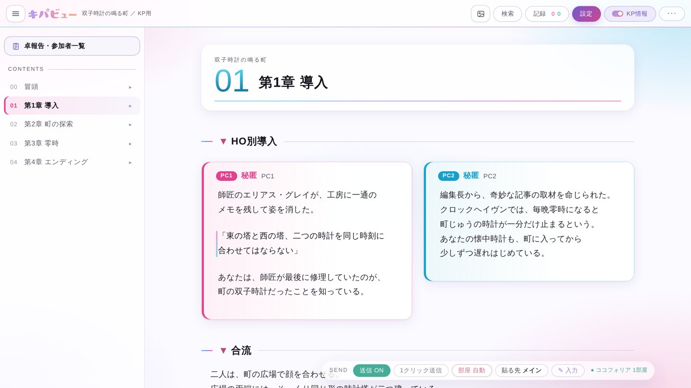

KP 向けシナリオビューア ／ Windows
キパビュー（KP Viewer）
キパビューは、TRPG の KP（キーパー）のためのシナリオビューアです。シナリオを読み込んで、本文をクリックするだけでオンラインセッションのチャット（ココフォリア・Tekey・Discord）に送れます。卓の予定と記録、探索者の管理もまとめてできます。名前は「KP ビューア」を縮めたものです。

できること
- クリックで送る本文・セリフを 1 行ずつ、ココフォリアなどのチャットへ。
- シナリオ本棚買ったシナリオや自作のシナリオをまとめて管理。
- 本文を直す見出し・カード・秘匿など、送りやすい形に整える。
- 卓の予定と記録日程・参加者・ログ・感想を卓ごとに残す。
- 探索者の管理能力値・技能・立ち絵・差分をまとめて。
- Google カレンダー連携卓の日程を、自分の Google カレンダーへ（下を見てください）。
Google カレンダー連携
設定で「Google にログイン」を押すと、キパビューが Google カレンダーに「キパビュー 卓予定」というカレンダーを作り、キパビューに入っている卓の日程を予定として入れます。卓の日程を変えたり消したりすると、予定も直したり消したりします（キパビュー → Google の片方向）。
- 使う権限は、キパビューが作ったカレンダーだけを読み書きするもの（
calendar.app.created）です。ほかのカレンダーや予定は読みませんし、書き換えません。 - 送る卓（自分が KP・PL の卓だけなど）、予定の説明に入れる項目、色、通知は、設定で選べます。
- Google のトークンは、あなたのパソコンにだけ保存します。作者のサーバーには送りません。
- 設定の「つながりを外す」で、いつでもやめられます。
KP Viewer can mirror your session schedule to a calendar it creates in your Google Calendar (“キパビュー 卓予定”). It uses the calendar.app.created scope, so it can only access the calendar it created and the events in it. Tokens stay on your computer. See the privacy policy.